Entity Relationship Model
نموذج الكيانات والعلاقات
المتن الرئيسي
Key Terms
alternate key: all candidate keys not chosen as the primary keycandidate key: a simple or composite key that is unique (no two rows in a table may have the same value) and minimal (every column is necessary)
characteristic entities: entities that provide more information about another table
composite attributes: attributes that consist of a hierarchy of attributes
composite key: composed of two or more attributes, but it must be minimal
dependent entities: these entities depend on other tables for their meaning
derived attributes: attributes that contain values calculated from other attributes
derived entities: see dependent entities
EID: employee identification (ID)
entity: a thing or object in the real world with an independent existence that can be differentiated from other objects
entity relationship (ER) data model: also called an ER schema, are represented by ER diagrams. These are well suited to data modelling for use with databases.
entity relationship schema: see entity relationship data model
entity set:a collection of entities of an entity type at a point of time
entity type: a collection of similar entities
foreign key (FK): an attribute in a table that references the primary key in another table OR it can be null
independent entity: as the building blocks of a database, these entities are what other tables are based on
kernel: see independent entity
key: an attribute or group of attributes whose values can be used to uniquely identify an individual entity in an entity set
multivalued attributes: attributes that have a set of values for each entity
n-ary: multiple tables in a relationship
null: a special symbol, independent of data type, which means either unknown or inapplicable; it does not mean zero or blank
recursive relationship: see unary relationship
relationships: the associations or interactions between entities; used to connect related information between tables
relationship strength: based on how the primary key of a related entity is defined
secondary key an attribute used strictly for retrieval purposes
simple attributes: drawn from the atomic value domains
SIN: social insurance number
single-valued attributes: see simple attributes
stored attribute: saved physically to the database
ternary relationship: a relationship type that involves many to many relationships between three tables.
unary relationship: one in which a relationship exists between occurrences of the same entity set.
نموذج بيانات الكيانات والعلاقات (entity relationship - ER) موجود منذ أكثر من 35 عامًا. وهو مناسب جدًا لنمذجة البيانات (data modelling) للاستخدام مع قواعد البيانات لأنه مجرّد إلى حد كبير وسهل المناقشة والشرح. كما تُترجَم نماذج ER بسهولة إلى علاقات (relations). وتُمثَّل نماذج ER، التي تُسمَّى أيضًا مخطط ER (ER schema)، بواسطة مخططات ER.
Exercises
What two concepts are ER modelling based on?
The database in Figure 8.11 is composed of two tables. Use this figure to answer questions 2.1 to 2.5.
IMAGE10END Figure 8.11. Director and Play tables for question 2, by A. Watt.
Identify the primary key for each table.
Identify the foreign key in the PLAY table.
Identify the candidate keys in both tables.
Draw the ER model.
Does the PLAY table exhibit referential integrity? Why or why not?
Define the following terms (you may need to use the Internet for some of these):
schema
host language
data sublanguage
data definition language
unary relation
foreign key
virtual relation
connectivity
composite key
linking table
The RRE Trucking Company database includes the three tables in Figure 8.12. Use Figure 8.12 to answer questions 4.1 to 4.5.
IMAGE11END Figure 8.12. Truck, Base and Type tables for question 4, by A. Watt.
Identify the primary and foreign key(s) for each table.
Does the TRUCK table exhibit entity and referential integrity? Why or why not? Explain your answer.
What kind of relationship exists between the TRUCK and BASE tables?
How many entities does the TRUCK table contain ?
Identify the TRUCK table candidate key(s).
IMAGE12END Figure 8.13. Customer and BookOrders tables for question 5, by A. Watt.
Suppose you are using the database in Figure 8.13, composed of the two tables. Use Figure 8.13 to answer questions 5.1 to 5.6.
Identify the primary key in each table.
Identify the foreign key in the BookOrders table.
Are there any candidate keys in either table?
Draw the ER model.
Does the BookOrders table exhibit referential integrity? Why or why not?
Do the tables contain redundant data? If so which table(s) and what is the redundant data?
Looking at the student table in Figure 8.14, list all the possible candidate keys. Why did you select these?
IMAGE13END Figure 8.14. Student table for question 6, by A. Watt.
IMAGE14END Figure 8.15. ERD of school database for questions 7-10, by A. Watt.
Use the ERD of a school database in Figure 8.15 to answer questions 7 to 10.
Identity all the kernels and dependent and characteristic entities in the ERD.
Which of the tables contribute to weak relationships? Strong relationships?
Looking at each of the tables in the school database in Figure 8.15, which attribute could have a NULL value? Why?
Which of the tables were created as a result of many to many relationships?
Also see Appendix B: Sample ERD Exercises
يرتكز نمذجة ER على مفهومين:
- الكيانات (entities)، وتعرَّف بأنها جداول تحتفظ بمعلومات (بيانات) محددة
- العلاقات (relationships)، وتعرَّف بأنها الترابطيات أو التفاعلات بين الكيانات
إليك مثالًا على كيفية جمع هذين المفهومين في نموذج بيانات ER: الأستاذ Ba (كيان) يُدرِّس (علاقة) مادة أنظمة قواعد البيانات (كيان).
في بقية هذا الفصل، سنستخدم قاعدة بيانات تجريبية تسمى قاعدة بيانات COMPANY (COMPANY database) لتوضيح مفاهيم نموذج ER. وتحتوي هذه القاعدة على معلومات عن الموظفين والإدارات والمشاريع. ومن النقاط المهمة التي ينبغي ملاحظتها ما يلي:
- توجد عدة إدارات في الشركة. ولكل إدارة معرّف فريد واسم وموقع المكتب وموظف بعينه يدير الإدارة.
- تسيطر الإدارة على عدد من المشاريع، لكل منها اسم فريد ورقم فريد وميزانية.
- لكل موظف اسم ورقم تعريف وعنوان وراتب وتاريخ ميلاد. ويُسند الموظف إلى إدارة واحدة لكنه يمكن أن ينضم إلى عدة مشاريع. ونحتاج إلى تسجيل تاريخ بداية الموظف في كل مشروع. كما نحتاج إلى معرفة المشرف المباشر لكل موظف.
- نرغب في متابعة المعالين لكل موظف. ولكل معيل اسم وتاريخ ميلاد وصلة القرابة بالموظف.
الكيان ومجموعة الكيانات ونوع الكيان
الكيان (entity) هو شيء أو كائن (object) في العالم الحقيقي له وجود مستقل يمكن تمييزه عن الكائنات الأخرى. وقد يكون الكيان:
- كائنًا ذا وجود مادي (مثل: محاضر، طالب، سيارة)
- كائنًا ذا وجود مفاهيمي (مثل: مقرر، وظيفة، منصب)
يمكن تصنيف الكيانات بحسب قوتها. ويُعدّ الكيان ضعيفًا (weak) إذا كانت جداوله معتمدة الوجود. معنى ذلك أنه لا يمكن أن يوجد دون علاقة مع كيان آخر. ومفتاحه الأساسي (primary key) مشتق من المفتاح الأساسي للكيان الأصل. وجدول Spouse في قاعدة بيانات COMPANY هو كيان ضعيف لأن مفتاحه الأساسي معتمد على جدول Employee. فمن دون سجل موظف مقابل، لن يوجد سجل الزوج/الزوجة.
ويُعدّ الكيان قويًا (strong) إذا كان يمكنه أن يوجد بمعزل عن جميع الكيانات المرتبطة به.
- النوى (kernels) هي كيانات قوية.
- الجدول الذي لا يحتوي على مفتاح أجنبي (foreign key)، أو الجدول الذي يحتوي على مفتاح أجنبي يمكن أن يحمل قيم NULL، هو كيان قوي
ومن المصطلحات الأخرى التي ينبغي معرفتها نوع الكيان (entity type)، وهو ما يعرّف مجموعة من الكيانات المتشابهة.
مجموعة الكيانات (entity set) هي مجموعة كيانات من نوع كيان واحد عند نقطة زمنية بعينها. وفي مخطط الكيانات والعلاقات (entity relationship diagram - ERD)، يُمثَّل نوع الكيان باسم داخل مستطيل. فمثلًا، في الشكل 8.1، نوع الكيان هو EMPLOYEE.
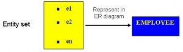
الاعتماد على الوجود (Existence dependency)
وجود الكيان معتمد على وجود الكيان المرتبط به. وهو معتمد الوجود (existence-dependent) إذا كان لديه مفتاح أجنبي إلزامي (أي سمة مفتاح أجنبي لا يمكن أن تكون NULL). فمثلًا، في قاعدة بيانات COMPANY، يكون كيان Spouse معتمدًا في وجوده على كيان Employee.
أنواع الكيانات
ينبغي أيضًا أن تكون على دراية بأنواع مختلفة من الكيانات، بما فيها الكيانات المستقلة (independent entities) والكيانات المعتمدة (dependent entities) والكيانات الوصفية (characteristic entities). وهي موصوفة أدناه.
الكيانات المستقلة
الكيانات المستقلة (independent entities)، ويشار إليها أيضًا بالنوى (kernels)، هي العمود الفقري لقاعدة البيانات. فهي الأساس الذي تُبنى عليه الجداول الأخرى. وتتميز النوى بما يلي:
- إنها لبنات البناء في قاعدة البيانات.
- قد يكون المفتاح بسيطًا أو مركّبًا.
- المفتاح الأساسي ليس مفتاحًا أجنبيًا.
- لا تعتمد في وجودها على كيان آخر.
وإذا عدنا إلى قاعدة بيانات COMPANY، فإن أمثلة الكيان المستقل تشمل جدول Customer أو جدول Employee أو جدول Product.
الكيانات المعتمدة
الكيانات المعتمدة (dependent entities)، ويشار إليها أيضًا بالكيانات المشتقّة (derived entities)، تعتمد على جداول أخرى في معناها. وتتميز هذه الكيانات بما يلي:
- تُستخدم الكيانات المعتمدة لربط ناويين معًا.
- يُقال إنها معتمدة الوجود على جدولين أو أكثر.
- تتحوّل العلاقات المتعددة إلى المتعددة (many-to-many) إلى جداول ترابطية (associative tables) بمفتاحين أجنبيين على الأقل.
- قد تحتوي على سمات أخرى.
- يحدّد المفتاح الأجنبي كل جدول مرتبط.
- هناك ثلاثة خيارات للمفتاح الأساسي: استخدم مركّبًا من المفاتيح الأجنبية للجداول المرتبطة إذا كان فريدًا
- استخدم مركّبًا من المفاتيح الأجنبية وعمودًا مميِّزًا
- أنشئ مفتاحًا أساسيًا بسيطًا جديدًا
الكيانات الوصفية
توفّر الكيانات الوصفية (characteristic entities) معلومات أكثر عن جدول آخر. وتتميز هذه الكيانات بما يلي:
- تمثّل سمات متعدّدة القيم (multivalued attributes).
- تصف كيانات أخرى.
- تمتلك عادةً علاقة واحد إلى متعدد (one-to-many).
- يُستخدم المفتاح الأجنبي لتحديد الجدول الموصوف أكثر.
- خيارات المفتاح الأساسي هي كما يلي: استخدم مركّبًا من المفتاح الأجنبي وعمود مميِّز
- أنشئ مفتاحًا أساسيًا بسيطًا جديدًا. وفي قاعدة بيانات COMPANY، قد تشمل هذه: Employee (EID, Name, Address, Age, Salary) – حيث EID هو المفتاح الأساسي البسيط.
- EmployeePhone (EID, Phone) – حيث EID جزء من مفتاح أساسي مركّب. وهنا أيضًا يكون EID مفتاحًا أجنبيًا.
السمات
يصف كل كيان بمجموعة من السمات (attributes) (مثل: Employee = (Name, Address, Birthdate (Age), Salary).
لكل سمة اسم، وهي مرتبطة بكيان وبنطاق (domain) من القيم المشروعة. غير أن معلومات نطاق السمة لا تظهر في مخطط ERD.
في مخطط الكيانات والعلاقات الموضح في الشكل 8.2، تُمثَّل كل سمة بقطع ناقص بداخله اسم.
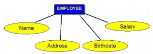
أنواع السمات
هناك بضعة أنواع من السمات ينبغي أن تكون على دراية بها. بعضها يُترك كما هو، لكن بعضها يحتاج إلى تعديل لتسهيل تمثيله في النموذج العلائقي. ويتناول هذا القسم الأول أنواع السمات. وسنناقش لاحقًا تعديل السمات لتلائم النموذج العلائقي على نحو صحيح.
السمات البسيطة
السمات البسيطة (simple attributes) هي المأخوذة من نطاقات القيم الذرّية؛ وتُسمَّى أيضًا سمات أحادية القيمة (single-valued attributes). وفي قاعدة بيانات COMPANY، يكون مثال على ذلك: Name = {John} ; Age = {23}
السمات المركّبة
السمات المركّبة (composite attributes) هي التي تتألف من تسلسل هرمي من السمات. وباستخدام مثال قاعدة البيانات لدينا، والموضح في الشكل 8.3، قد تتألف Address من Number وStreet وSuburb. وهكذا يُكتب ذلك → Address = {59 + ‘Meek Street’ + ‘Kingsford’}
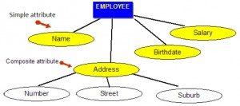
السمات متعدّدة القيم
السمات متعدّدة القيم (multivalued attributes) هي سمات لدى كل كيان مجموعة قيم. ومثال على سمة متعدّدة القيم من قاعدة بيانات COMPANY، كما هو ظاهر في الشكل 8.4، هو الدرجات العلمية للموظف: BSc، MIT، PhD.
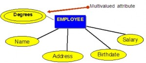
السمات المشتقّة
السمات المشتقّة (derived attributes) هي سمات تحتوي على قيم محسوبة من سمات أخرى. ويمكن رؤية مثال على ذلك في الشكل 8.5. فالعمر (Age) يمكن اشتقاقه من سمة تاريخ الميلاد (Birthdate). وفي هذه الحالة، تُسمَّى Birthdate سمة مخزَّنة (stored attribute)، وهي محفوظة فعليًا في قاعدة البيانات.
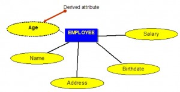
المفاتيح
من القيود المهمة على الكيان هو المفتاح (key). والمفتاح هو سمة أو مجموعة من السمات يمكن لقيمها أن تُستخدم لتحديد كيان فردي بشكل فريد ضمن مجموعة كيانات.
أنواع المفاتيح
هناك عدة أنواع من المفاتيح. وهي موصوفة أدناه.
المفتاح المرشّح
المفتاح المرشّح (candidate key) هو مفتاح بسيط أو مركّب يكون فريدًا ودنيًا. وهو فريد لأن لا يصحّ أن يكون لصفّين في الجدول أن يكون لهما القيمة نفسها في أي وقت. وهو دني لأن كل عمود ضروري لتحقيق التفرّد.
ومن مثال قاعدة بيانات COMPANY، إذا كان الكيان هو Employee(EID, First Name, Last Name, SIN, Address, Phone, BirthDate, Salary, DepartmentID)، فإن المفاتيح المرشّحة الممكنة هي:
- EID، SIN
- First Name وLast Name – مع الافتراض أنه لا يوجد شخص آخر في الشركة الاسم نفسه
- Last Name وDepartmentID – مع الافتراض أن شخصين باللقب نفسه لا يعملان في الإدارة نفسها
المفتاح المركّب
المفتاح المركّب (composite key) يتألف من سمة واحدة أو أكثر، ويجب أن يكون دنيًا.
وباستخدام المثال من قسم المفتاح المرشّح، فإن المفاتيح المركّبة الممكنة هي:
- First Name وLast Name – مع الافتراض أنه لا يوجد شخص آخر في الشركة الاسم نفسه
- Last Name وDepartment ID – مع الافتراض أن شخصين باللقب نفسه لا يعملان في الإدارة نفسها
المفتاح الأساسي
المفتاح الأساسي (primary key) هو مفتاح مرشّح يختاره مصمّم قاعدة البيانات ليُستخدَم كآلية تعريف لمجموعة الكيانات بأكملها. ويجب أن يحدّد tuples في الجدول تعريفًا فريدًا وألا يكون NULL. ويُشار إلى المفتاح الأساسي في نموذج ER بوضع خط تحت السمة.
- يختار المصمّم مفتاحًا مرشّحًا لتحديد tuples في الجدول تعريفًا فريدًا. ويجب ألا يكون NULL.
- يختار مصمّم قاعدة البيانات مفتاحًا ليُستخدَم كآلية تعريف لمجموعة الكيانات بأكملها. ويُشار إلى هذا بـ المفتاح الأساسي. ويُشار إلى هذا المفتاح بوضع خط تحت السمة في نموذج ER.
في المثال التالي، EID هو المفتاح الأساسي:
Employee(EID, First Name, Last Name, SIN, Address, Phone, BirthDate, Salary, DepartmentID)
المفتاح الثانوي
المفتاح الثانوي (secondary key) هو سمة تُستخدم حصرًا لأغراض الاسترجاع (ويمكن أن يكون مركّبًا)، مثل: Phone وLast Name.
المفتاح البديل
المفاتيح البديلة (alternate keys) هي جميع المفاتيح المرشّحة التي لم تختر كمفتاح أساسي.
المفتاح الأجنبي
المفتاح الأجنبي (foreign key - FK) هو سمة في جدول تشير إلى المفتاح الأساسي في جدول آخر أو يمكن أن تكون NULL. ويجب أن يكون المفتاحان الأجنبي والأساسي من نوع البيانات نفسه.
في مثال قاعدة بيانات COMPANY أدناه، DepartmentID هو المفتاح الأجنبي:
Employee(EID, First Name, Last Name, SIN, Address, Phone, BirthDate, Salary, DepartmentID)
قيم NULL
NULL هي رمز خاص، مستقل عن نوع البيانات، يعني إما «غير معروف» أو «غير منطبق». وهي لا تعني الصفر أو الفراغ. وتتشمل خصائص NULL ما يلي:
- لا إدخال بيانات
- غير مسموح به في المفتاح الأساسي
- ينبغي تجنّبه في السمات الأخرى
- يمكن أن تمثّل قيمة سمة غير معروفة
- قيمة سمة معروفة لكنها مفقودة
- حالة «غير منطبق»
يمكن أن تسبّب مشكلات عند استخدام دوال مثل COUNT وAVERAGE وSUM، ويمكن أن تسبّب مشكلات منطقية عند ربط الجداول العلائقية.
ملاحظة: تكون نتيجة عملية المقارنة NULL إذا كان أحد مُعامليه NULL. وتكون نتيجة عملية حسابية NULL إذا كان أحد مُعامليه NULL (ما عدا الدوال التي تتجاهل قيم NULL).
مثال على كيفية استخدام NULL
استخدم جدول الرواتب (Salary_tbl) في الشكل 8.6 لاتباع مثال على كيفية استخدام NULL.
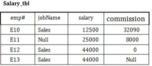
للبدء، ابحث عن جميع الموظفين (emp#) في Sales (ضمن عمود jobName) الذين يزيد مجموع راتبهم وعمولتهم عن 30,000.
- SELECT emp# FROM Salary_tbl
- WHERE jobName = Sales AND
- (commission + salary) > 30,000 –> E10 and E12
لا تتضمن هذه النتيجة E13 بسبب القيمة NULL في عمود commission. ولضمان تضمين الصف الذي يحتوي على القيمة NULL، علينا النظر إلى الحقول منفردة. فعند جمع commission و salary للموظف E13، تكون النتيجة قيمة NULL. والحل مبين أدناه.
- SELECT emp# FROM Salary_tbl
- WHERE jobName = Sales AND
- (commission > 30000 OR
- salary > 30000 OR
- (commission + salary) > 30,000 –>E10 and E12 and E13
العلاقات
العلاقات (relationships) هي الغراء الذي يُمسك الجداول معًا. وتُستخدم لربط المعلومات المترابطة بين الجداول.
تعتمد قوة العلاقة (relationship strength) على كيفية تعريف المفتاح الأساسي للكيان المرتبط. وتوجد علاقة ضعيفة، أو غير محدِّدة الهوية (non-identifying)، إذا لم يحتوِ المفتاح الأساسي للكيان المرتبط على مكوّن من مكوّنات المفتاح الأساسي للكيان الأصل. وتشمل أمثلة قاعدة بيانات الشركة ما يلي:
- Customer(CustID, CustName)
- Order(OrderID, CustID, Date)
وتوجد علاقة قوية، أو محدِّدة للهوية (identifying)، عندما يحتوي المفتاح الأساسي للكيان المرتبط على المكوّن الأساسي للمفتاح للكيان الأصل. وتشمل الأمثلة ما يلي:
- Course(CrsCode, DeptCode, Description)
- Class(CrsCode, Section, ClassTime…)
أنواع العلاقات
فيما يلي وصف لأنواع العلاقات المختلفة.
علاقة واحد إلى متعدد (1:M)
ينبغي أن تكون العلاقة واحد إلى متعدد (one to many - 1:M) هي القاعدة في أي تصميم لقاعدة بيانات علائقية، وهي موجودة في جميع بيئات قواعد البيانات العلائقية. فمثلًا، لدى القسم الواحد موظفون كثيرون. ويوضح الشكل 8.7 علاقة أحد هؤلاء الموظفين بالقسم.
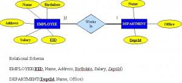
علاقة واحد إلى واحد (1:1)
علاقة واحد إلى واحد (one to one - 1:1) هي علاقة كيان واحد مع كيان واحد فقط، والعكس صحيح. وينبغي أن تكون نادرة في أي تصميم لقاعدة بيانات علائقية. وفي الواقع، قد تشير إلى أن الكيانين ينتميان في الواقع إلى الجدول نفسه.
ومن أمثلة قاعدة بيانات COMPANY أن موظفًا واحدًا مرتبط بزوج أو زوجة واحدة، وأن الزوج أو الزوجة الواحدة مرتبطة بموظف واحد.
علاقات متعدد إلى متعدد (M:N)
فيما يلي نقاط يجبأخذها في الحسبان في علاقة متعدد إلى متعدد (many to many):
- لا يمكن تنفيذها كما هي في النموذج العلائقي.
- يمكن تحويلها إلى علاقتي 1:M.
- يمكن تنفيذها بتقسيمها لإنتاج مجموعة من علاقات 1:M.
- تنطوي على تنفيذ كيان مركّب.
- تُنشئ علاقتي 1:M أو أكثر.
- يجب أن يحتوي جدول الكيان المركّب على المفاتيح الأساسية للجداول الأصلية على الأقل.
- يحتوي جدول الترابط على تكرارات متعددة لقيم المفتاح الأجنبي.
- يمكن إسناد سمات إضافية عند الحاجة.
- يمكنها تفادي المشكلات الكامنة في علاقة M:N عبر إنشاء كيان مركّب أو كيان جسور (bridge entity). فمثلًا، يمكن للموظف أن يعمل على مشاريع كثيرة أو يمكن للمشروع أن يكون عليه موظفون كثيرون، بحسب قواعد العمل. أو يمكن للطالب أن يكون لديه مقررات كثيرة ويمكن للمقرر أن يضم طلابًا كثيرين.
ويوضح الشكل 8.8 جانبًا آخر من جوانب علاقة M:N حيث يكون لدى الموظف تواريخ بداية مختلفة لمشاريع مختلفة. لذلك نحتاج إلى جدول JOIN يحتوي على EID وCode وStartDate.
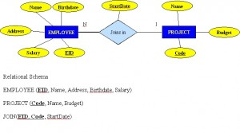
مثال على ربط نوع علاقة ثنائي M:N
- لكل علاقة ثنائية M:N، حدّد علاقتين.
- يمثّل A وB نوعَي كيان يشاركان في R.
- أنشئ علاقة جديدة S لتمثيل R.
- تحتاج S إلى أن تحتوي على PK لكل من A وB. ويمكن أن يكون هذان معًا هو PK في الجدول S، أو يمكن أن يكونا معًا مع سمة بسيطة أخرى في الجدول الجديد R هو PK.
- سيشكّل تركيب المفاتيح الأساسية (A وB) المفتاح الأساسي لـ S.
العلاقة الأحادية (متكررة)
العلاقة الأحادية (unary relationship)، وتُسمَّى أيضًا المتكررة (recursive)، هي علاقة تقوم بين ظهورات من مجموعة الكيانات نفسها. وفي هذه العلاقة، يكون المفتاح الأساسي والمفتاح الأجنبي متطابقين، لكنهما يمثّلان كيانين لهما دوران مختلفان. انظر الشكل 8.9 لمثال على ذلك.
بالنسبة إلى بعض الكيانات في العلاقة الأحادية، يمكن إنشاء عمود منفصل يشير إلى المفتاح الأساسي لمجموعة الكيانات نفسها.
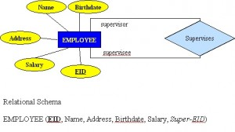
العلاقات الثلاثية
العلاقة الثلاثية (ternary relationship) هي نوع علاقة ينطوي على علاقات متعدد إلى متعدد بين ثلاثة جداول.
ارجع إلى الشكل 8.10 لمثال على ربط نوع علاقة ثلاثية. ولاحظ أن n-ary تعني جداول متعددة في العلاقة. (تذكّر، N = متعدد.)
- لكل علاقة n-ary (أكبر من 2)، أنشئ علاقة جديدة لتمثيل العلاقة.
- المفتاح الأساسي للعلاقة الجديدة هو تركيبة من المفاتيح الأساسية للكيانات المشاركة التي تحتل جانب N (المتعدد).
- في معظم حالات علاقة n-ary، تحتل جميع الكيانات المشاركة جانب المتعدد.
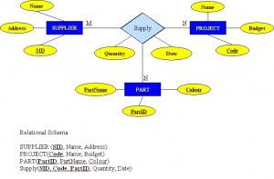
المفتاح البديل (alternate key): جميع المفاتيح المرشّحة التي لم تختر كمفتاح أساسي
المفتاح المرشّح (candidate key): مفتاح بسيط أو مركّب يكون فريدًا (لا يمكن لصفّين في الجدول أن يكون لهما القيمة نفسها) ودنيًا (كل عمود ضروري)
الكيانات الوصفية (characteristic entities): كيانات توفّر معلومات أكثر عن جدول آخر
السمات المركّبة (composite attributes): سمات تتألف من تسلسل هرمي من السمات
المفتاح المركّب (composite key): يتألف من سمة واحدة أو أكثر، ويجب أن يكون دنيًا
الكيانات المعتمدة (dependent entities): هذه الكيانات تعتمد على جداول أخرى في معناها
السمات المشتقّة (derived attributes): سمات تحتوي على قيم محسوبة من سمات أخرى
الكيانات المشتقّة (derived entities): انظر الكيانات المعتمدة
EID: معرّف الموظف (ID)
الكيان (entity): شيء أو كائن في العالم الحقيقي له وجود مستقل يمكن تمييزه عن الكائنات الأخرى
نموذج بيانات الكيانات والعلاقات (entity relationship - ER data model): الذي يُسمَّى أيضًا مخطط ER، ويُمثَّل بواسطة مخططات ER. وهذه مناسبة جدًا لنمذجة البيانات للاستخدام مع قواعد البيانات.
مخطط الكيانات والعلاقات (entity relationship schema): انظر نموذج بيانات الكيانات والعلاقات
مجموعة الكيانات (entity set): مجموعة كيانات من نوع كيان واحد عند نقطة زمنية بعينها
نوع الكيان (entity type): مجموعة من الكيانات المتشابهة
المفتاح الأجنبي (foreign key - FK): سمة في جدول تشير إلى المفتاح الأساسي في جدول آخر أو يمكن أن تكون NULL
الكيان المستقل (independent entity): هذه الكيانات هي لبنات بناء قاعدة البيانات، وهي الأساس الذي تُبنى عليه الجداول الأخرى
النواة (kernel): انظر الكيان المستقل
المفتاح (key): سمة أو مجموعة سمات يمكن لقيمها أن تُستخدم لتحديد كيان فردي بشكل فريد ضمن مجموعة كيانات
السمات متعدّدة القيم (multivalued attributes): سمات لدى كل كيان مجموعة قيم
n-ary: جداول متعددة في علاقة
NULL: رمز خاص، مستقل عن نوع البيانات، يعني إما «غير معروف» أو «غير منطبق»؛ وهو لا يعني الصفر أو الفراغ
العلاقة المتكررة (recursive relationship): انظر العلاقة الأحادية
العلاقات (relationships): الترابطيات أو التفاعلات بين الكيانات؛ وتُستخدم لربط المعلومات المترابطة بين الجداول
قوة العلاقة (relationship strength): تعتمد على كيفية تعريف المفتاح الأساسي للكيان المرتبط
المفتاح الثانوي (secondary key): سمة تُستخدم حصرًا لأغراض الاسترجاع
السمات البسيطة (simple attributes): المأخوذة من نطاقات القيم الذرّية
SIN: رقم التأمين الاجتماعي
السمات أحادية القيمة (single-valued attributes): انظر السمات البسيطة
السمة المخزَّنة (stored attribute): محفوظة فعليًا في قاعدة البيانات
العلاقة الثلاثية (ternary relationship): نوع علاقة ينطوي على علاقات متعدد إلى متعدد بين ثلاثة جداول.
العلاقة الأحادية (unary relationship): علاقة تقوم بين ظهورات من مجموعة الكيانات نفسها.
- ما المفهومان اللذان يقوم عليهما نمذجة ER؟
- تتألف قاعدة البيانات في الشكل 8.11 من جدولين. استخدم هذا الشكل للإجابة عن الأسئلة من 2.1 إلى 2.5.
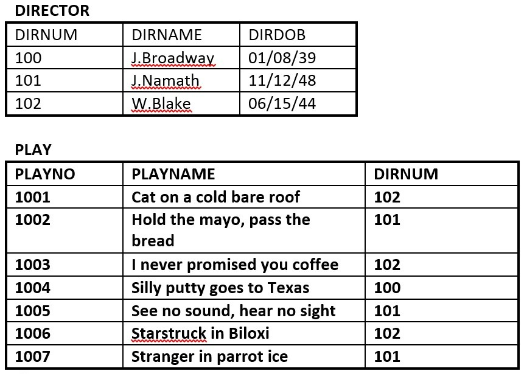
الشكل 8.11. جدولا Director وPlay للسؤال 2، من إعداد A. Watt. حدّد المفتاح الأساسي لكل جدول. - حدّد المفتاح الأجنبي في جدول PLAY.
- حدّد المفاتيح المرشّحة في كلا الجدولين.
- ارسم نموذج ER.
- هل يفي جدول PLAY بالسلامة المرجعية (referential integrity)؟ ولماذا أو لماذا لا؟
عرّف المصطلحات التالية (قد تحتاج إلى استخدام الإنترنت لبعضها): schema، host language، data sublanguage، data definition language، unary relation، foreign key، virtual relation، connectivity، composite key، linking table. تتضمن قاعدة بيانات شركة RRE Trucking الجداول الثلاثة في الشكل 8.12. استخدم الشكل 8.12 للإجابة عن الأسئلة من 4.1 إلى 4.5.
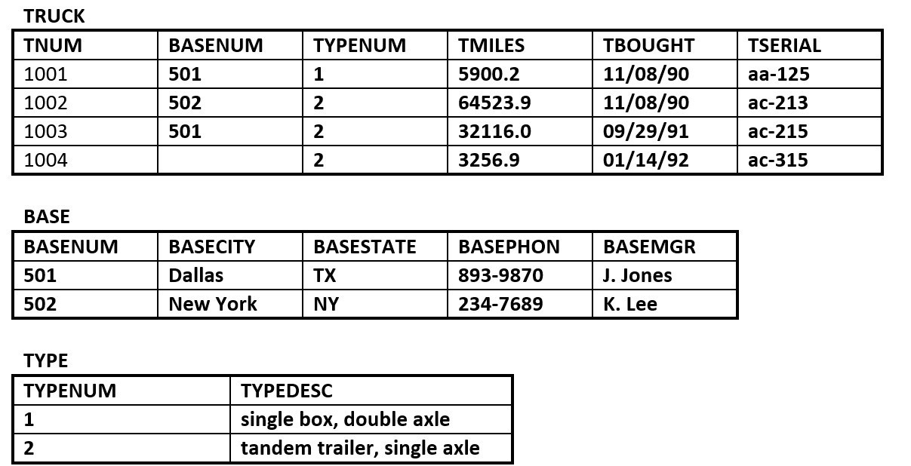
- حدّد المفتاح الأساسي والمفتاح/المفاتيح الأجنبية لكل جدول.
- هل يفي جدول TRUCK بسلامة الكيان (entity integrity) والسلامة المرجعية؟ ولماذا أو لماذا لا؟ اشرح إجابتك.
- ما نوع العلاقة الموجودة بين جدولي TRUCK وBASE؟
- كم عدد الكيانات التي يحتويها جدول TRUCK؟
- حدّد المفتاح/المفاتيح المرشّحة لجدول TRUCK.
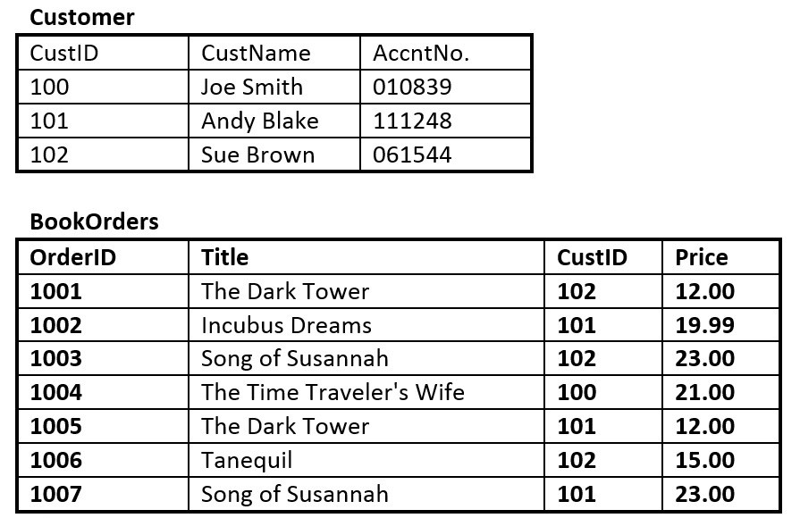
الشكل 8.13. جدولا Customer وBookOrders للسؤال 5، من إعداد A. Watt.
لنفترض أنك تستخدم قاعدة البيانات الموضحة في الشكل 8.13، والمؤلَّفة من الجدولين. استخدم الشكل 8.13 للإجابة عن الأسئلة من 5.1 إلى 5.6.
- حدّد المفتاح الأساسي في كل جدول.
- حدّد المفتاح الأجنبي في جدول BookOrders.
- هل هناك أي مفاتيح مرشّحة في أي من الجدولين؟
- ارسم نموذج ER.
- هل يفي جدول BookOrders بالسلامة المرجعية؟ ولماذا أو لماذا لا؟
- هل تحتوي الجداول على بيانات مكرّرة (redundant)؟ إذا كان الأمر كذلك، فما الجدول أو الجداول وما هي البيانات المكرّرة؟
بالنظر إلى جدول student في الشكل 8.14، اذكر جميع المفاتيح المرشّحة الممكنة. ولماذا اخترت هذه؟
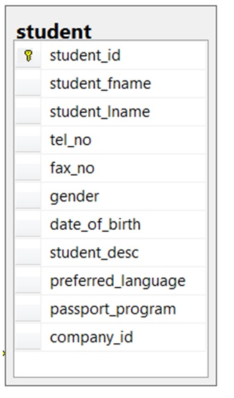
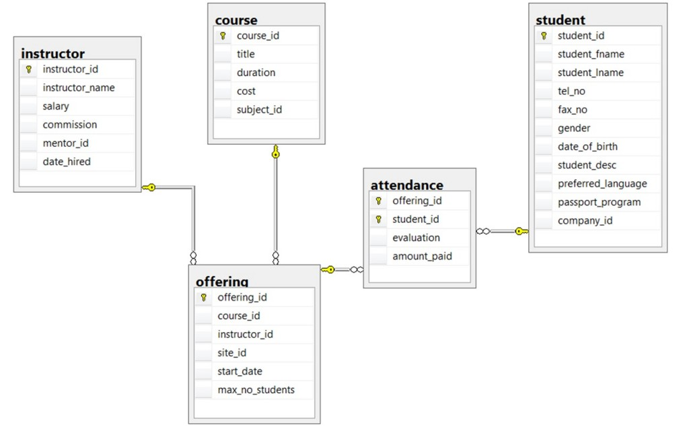
استخدم مخطط ERD لقاعدة بيانات مدرسة في الشكل 8.15 للإجابة عن الأسئلة من 7 إلى 10. حدّد جميع النوى والكيانات المعتمدة والوصفية في مخطط ERD. أي الجداول تسهم في العلاقات الضعيفة؟ وفي العلاقات القوية؟ وبالنظر إلى كل جدول في قاعدة بيانات المدرسة في الشكل 8.15، ما السمة التي يمكن أن تحمل قيمة NULL؟ ولماذا؟ أي الجداول أُنشئت نتيجة علاقات متعدد إلى متعدد؟ انظر أيضًا الملحق B: تمارين ERD نموذجية
الإسناد (Attribution)
هذا الفصل من كتاب تصميم قواعد البيانات (Database Design)، بما في ذلك الصور باستثناء ما أُشير إليه خلاف ذلك، هو نسخة مشتقة من Data Modeling Using Entity-Relationship Model بقلم Nguyen Kim Anh، وهو مرخَّص بموجب رخصة المشاع الإبداعي: نسب العمل 3.0
كتبت المادة التالية Adrienne Watt:
- قسم قيم NULL ومثاله
- المصطلحات المفتاحية
- التمارين